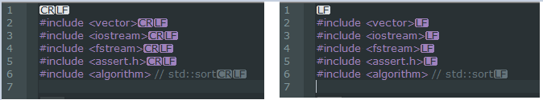

Build error, 具体是error C4335: Mac file format detected: please convert the source file to either DOS or UNIX format怎么办呢？
故事的开端是checkin了一个.cpp，当然本地是build过的，但是server端那边反馈说build error, 具体是 error C4335: Mac file format detected: please convert the source file to either DOS or UNIX format
怎么办呢？当然是查看一下到底是那个.cpp文件的line ending是什么东西，然后改成合适的就ok了.
下面截图显示改之前是CR+LF, 改之后是LF的. 
用到的技术是: Notepad++ / view / show symble / show all characters Notepad++ / edit / EOL conversion / unix/osc format
btw, 本来perforce中的设置是unix没有错的，用visual studio更改文件，之前也没有类似的错误。怀疑是我用notepad++打开并编辑过那.cpp文件，不小心把line endings从unix format转为为windows format了.
unix format: LF
windows format: CR+LF